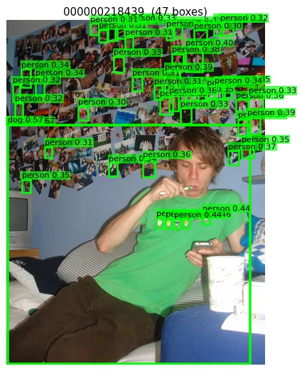
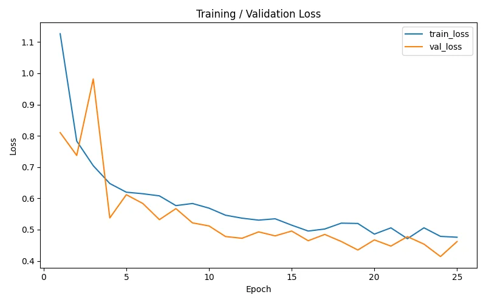
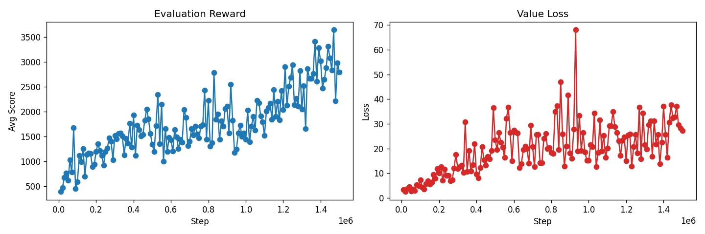
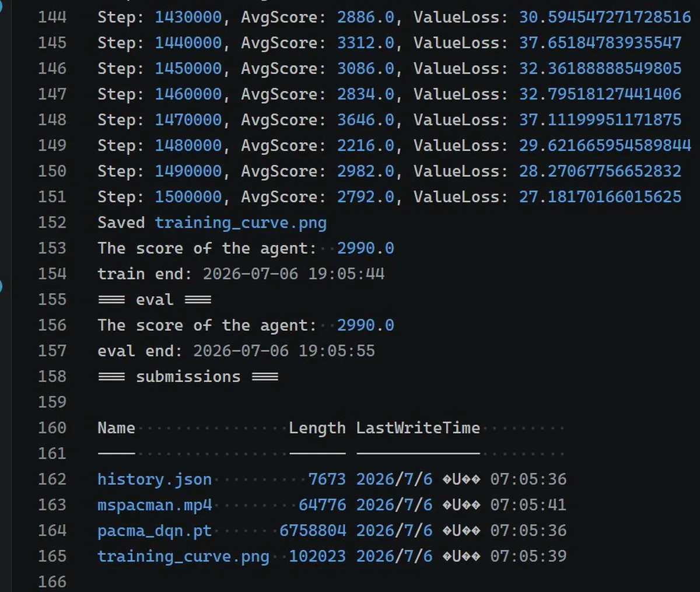

The previous entry indexed the first five MVC Lab assignments; this one records weeks six through eight. The work splits two ways: HW7 and HW8 train models from scratch, one a U-Net for semantic segmentation and one a DQN playing Ms. Pac-Man; HW6 takes an off-the-shelf pre-trained model for zero-shot detection, with the focus on researching how the prompt gets written. All three carry verifiable numbers, and the heaviest of them, the DQN, ran 1.5 million steps and scored 2990 on evaluation, clearing the 2000 full-marks threshold.
In the second half of the course, each of the three assignments covers a different type of task: HW6 uses Grounding DINO for zero-shot detection, which makes the whole assignment a prompt engineering study; HW7 builds a U-Net from scratch and segments six land classes on Dubai aerial imagery; HW8 uses a DQN to learn Ms. Pac-Man from pixels, the heaviest of the three in training volume. The record of the first five assignments sits at EXP / P16.
# The Three Assignments at a Glance
| HW | Topic | Framework / model | Key metric |
|---|---|---|---|
| HW6 | Grounding DINO open-set detection prompt study | grounding-dino-tiny (zero-shot) | person bare noun precision 0.812 |
| HW7 | U-Net semantic segmentation (Dubai aerial) | PyTorch from scratch (7.76M parameters) | pixel acc 0.8505 (threshold 0.84) |
| HW8 | DQN playing Ms. Pac-Man | PyTorch (Nature DQN) | eval 2990 (threshold 2000) |
# One by One
HW6 — Grounding DINO: a prompt engineering study
This assignment contains no training step anywhere. It takes grounding-dino-tiny from HuggingFace for zero-shot open-set detection, and the object of study is the prompt itself: five COCO classes, three prompt forms each (bare noun, with an article, descriptive phrase), measuring precision@IoU=0.5 across 20 annotated images, with the winning form then applied to 150 unannotated images for qualitative observation.
The results are consistent: for classes that are common and visually distinct, the bare noun wins across the board — person 0.812, car 0.889, cat 0.429; adding an article or a descriptive clause only produces a pile of low-confidence boxes and drags precision down. bicycle and dog are pathological cases on this small annotation set, with too few GT instances and descriptive prompts over-triggering, so their numbers carry limited reference value.

The failure modes are more instructive than the numbers. Dense scenes explode with boxes, and a room covered in a photo wall produced 46 person boxes; the descriptive dog prompt conjures dogs out of people and background texture; railings and limbs get read as bicycles. The conclusion lands on using it as an annotation aid: raise the confidence threshold to 0.40, add class-wise NMS, use bare nouns only. An annotator's bottleneck is deleting wrong boxes, which makes precision worth more than recall in this setting.
HW7 — U-Net semantic segmentation
A 7.76M parameter U-Net built from scratch: the encoder compresses the whole way down, the bottleneck hands over, the decoder scales back up with transposed convolutions, and skip connections join the two sides along the channel dimension. The data is Dubai aerial imagery, 72 large images cut into roughly 1300 patches of 256×256, across six land classes. After 25 epochs, validation pixel accuracy came out at 0.8505, clearing the course threshold of 0.84.
| Class | IoU |
|---|---|
| Water | 0.886 |
| Land | 0.810 |
| Building | 0.658 |
| Vegetation | 0.568 |
| Road | 0.527 |
| Unlabeled | 0.000 |
The ordering of per-class IoU matches intuition: water and bare land cover large areas with uniform texture and score highest; roads are thin and occupy little of the frame, landing at the bottom on 0.527, which is a long-standing problem in semantic segmentation. Unlabeled is a sparse catch-all class that the model almost never predicts on its own initiative, so its IoU sits at zero without affecting the pixel accuracy result.

HW8 — DQN learning Ms. Pac-Man from pixels
The task is getting an agent to learn Atari's Ms. Pac-Man straight from the screen. Input is 4 stacked 84×84 greyscale frames, running the classic Nature DQN architecture: three convolutional layers into two fully connected layers, outputting a Q value for each of 9 actions. Stacking 4 frames lets the network read direction of movement, since a single static frame gives no way to tell which way a ghost is heading, chasing or fleeing.
Training holds up on three mechanisms: a replay buffer storing 60,000 transitions, sampled randomly to break temporal correlation; a target network synchronised only every fixed number of steps, which keeps the learning target steady; and ε-greedy decaying linearly from 0.9 to 0.05, wandering around to explore early and acting on Q values later. A discount factor of 0.99 keeps the agent interested in long-term return.
Training volume is the score
The default 250,000 steps usually fails to reach the 2000-point full-marks threshold, so this run went straight to 1.5 million steps, taking just over eight hours on a single RTX 4060. Average score started around 400, crossed 1500 somewhere near 500,000 steps, and oscillated between 2200 and 3600 towards the end; the post-training evaluation scored 2990.


# Academic Integrity Statement
This entry is a personal study record. The starter skeletons and teaching notebooks for all three assignments came from the course; the TODO implementations, prompt design and every experimental figure are my own runs. Course datasets and model weights are never bundled here, so obtain them through official channels. MVC Lab students currently taking the course should write it once themselves, and the structure and reasoning here are open to reference.
# Technical Environment
- Language — Python 3.11
- Deep learning framework — PyTorch 2.x (HW7 / HW8)
- HW6 — HuggingFace Transformers (IDEA-Research/grounding-dino-tiny)
- HW8 — Gymnasium[atari] (ALE/MsPacman-v5)
- Hardware — RTX 4060 8GB (1.5 million steps for HW8 took around eight hours; scanning 150 images for HW6 took around 4 minutes)
# Related Links
MIT License